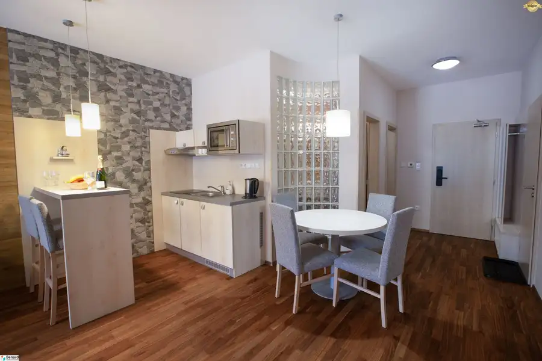
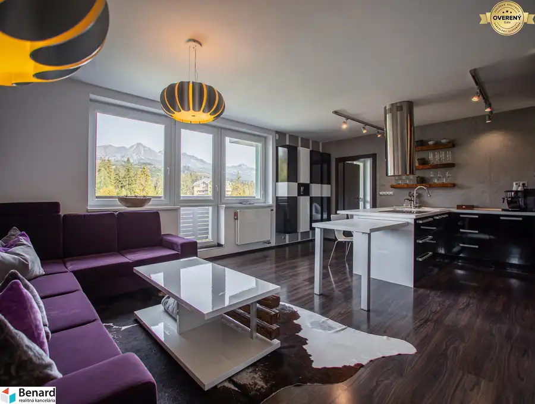
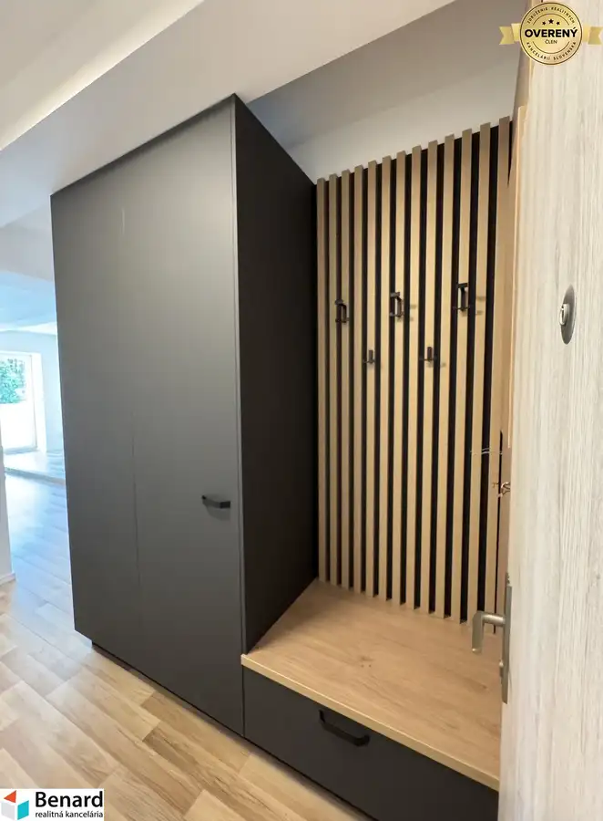

Stavebné pozemky vo vyhľadávanej lokalite obci Mlynica (Pieskovisko)
Mlynica
- Plocha653 m²
- Poschodie0.
- Stavpôvodný
- Vlastníctvoosobné
O nehnuteľnosti
Pozemky sú podľa platného územného plánu určené na výstavbu rodinných domov so zastavanosťou 35 %. Každý pozemok má šírku približne 20 metrov, čo poskytuje dostatok priestoru na komfortnú výstavbu.
Základné informácie:
výmery pozemkov od 653 m² do 1 056 m²,
spolu je v ponuke 13 stavebných pozemkov,
rovinatý terén,
obecná prístupová cesta,
možnosť okamžitej výstavby.
Inžinierske siete:
elektrina na hranici pozemkov,
vodovod a kanalizácia sú v procese realizácie a ich vybudovanie je plánované v najbližšom období.
Na vyžiadanie Vám radi zašleme územnoplánovaciu informáciu vydanú obcou, ktorá potvrdzuje určenie pozemkov na výstavbu rodinných domov.
Výhody lokality:
pokojná lokalita s novou zástavbou rodinných domov,
krásne výhľady na panorámu Vysokých Tatier,
výborná dostupnosť do Popradu, Svitu aj na diaľnicu D1,
ideálne spojenie pokojného bývania s rýchlou dostupnosťou do mesta,
kompletná občianska vybavenosť v blízkom okolí,
atraktívna lokalita vhodná na celoročné bývanie aj ako investícia,
množstvo možností na turistiku, cyklistiku, lyžovanie a ďalšie voľnočasové aktivity v regióne Vysokých Tatier.
Ak hľadáte miesto pre výstavbu svojho vysnívaného domova v pokojnom prostredí s výbornou dostupnosťou, tieto pozemky predstavujú výnimočnú príležitosť.
V prípade záujmu o viac informácií alebo obhliadku nás neváhajte kontaktovať. Radi Vám poskytneme všetky potrebné informácie a pomôžeme s výberom vhodného pozemku.
Cena: 93€/m2
Pri pozemkoch s parc. č.:
6698/4 s rozlohou 901m2,
6698/5 s rozlohou 946 m2,
6698/6 s rozlohou 934 m2,
6698/7 s rozlohou 1029 m2,
6698/8 s rozlohou 1054 m2,
6690/2 s rozlohou 848 m2,
6690/3 s rozlohou 955 m2,
6690/4 s rozlohou 653 m2,
a 6690/5 s rozlohou 754 m2,
plus doplatok za kanál v sume 10.000€ a doplatok za vodu 10.000€ po zrealizovaní (v časovom horizonte 2-3 rokov), v odloženej platbe v rámci Kúpnej zmluvy.
Cena: 103€/m2
Pri pozemkoch s parc. č.:
6698/12 s rozlohou 957 m2,
6698/13 s rozlohou 974 m2,
6698/14 s rozlohou 1056 m2,
a 6698/15 s rozlohou 1056 m2,
plus doplatok za vodu 10.000€ po zrealizovaní, v odloženej platbe v rámci Kúpnej zmluvy.
K týmto parcelám sa bude v mesiacoch 09/2026 a 10/2026 realizovať kanalizácia.
Parametre
| Rozloha pozemku | 653 m² |
|---|---|
| Poschodie | prízemie |
| Vlastníctvo | osobné |
| Stav | pôvodný |
| Odvoz odpadu | nie |
| Voda | studňa a vodovod |
| El. napätie | 230V |
| Plyn | nie |
| Kanalizácia | nie |
| Internet | nie |
| Inžinierske siete | áno |
| Káblová televízia | nie |
| Terén | rovina |
| Prístupová cesta | neupravená cesta |
| Pripravené na výstavbu | vydané územné rozhodnutie |
| Dátum zverejnenia | 6. 8. 2026 |
Kde to je
Mohlo by Vás zaujímať

Apartmány10 390 000 €APARTMÁN na Štrbskom Plese Strbske-pleso 2-izbový55.95 m²3. podlažie Benard ponúka exkluzívne na predaj apartmán 56 m2 na Štrbskom Plese. Či už ste milovníkom hôr, alebo zvažujete investíciu v Tatrách, táto ponuka je…
Byt9 290 000 €Zariadený 2-iz. BYT v Tatranskej Štrbe s krásnym výhľadom na Vys.Tatry Tatranska-strba, Tatranská Štrba 2-izbový57.74 m²3. podlažie Benard ponúka exkluzívne na predaj 2-izbový byt v Tatranskej Štrbe. Máte radi hory v každom ročnom období - turistiku v lete alebo lyžovanie v zime?…
Byt10 Cena dohodouNa prenájom 2-izbový byt v novostavbe Poprad-Veľká Poprad 2-izbový56.45 m² BENARD ponúka na prenájom priestranný a svetlý 2-izbový byt v novostavbe, situovaný v tichej a vyhľadávanej mestskej časti Poprad – Veľká. Je…